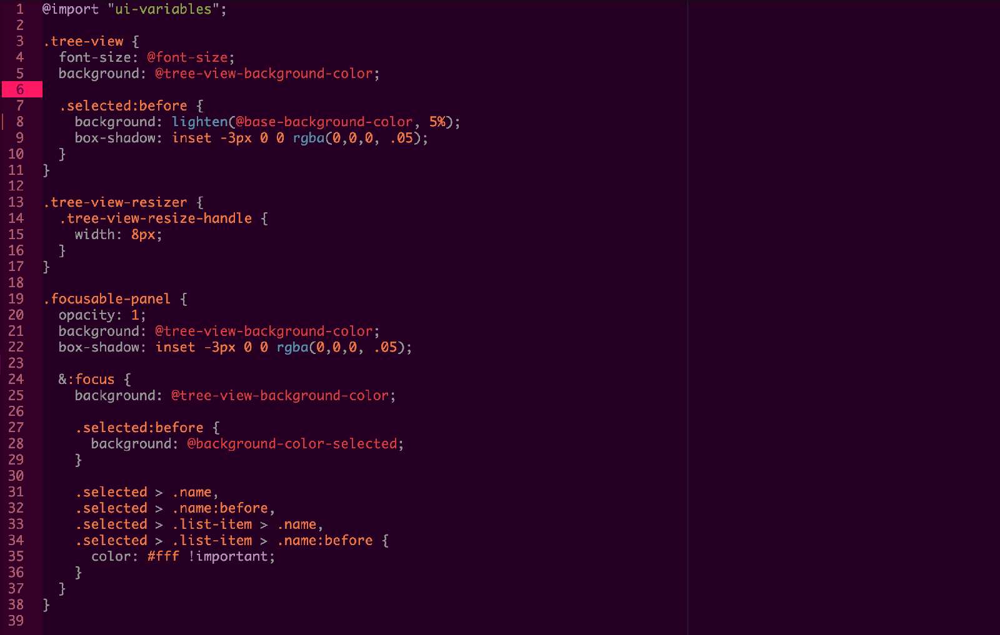
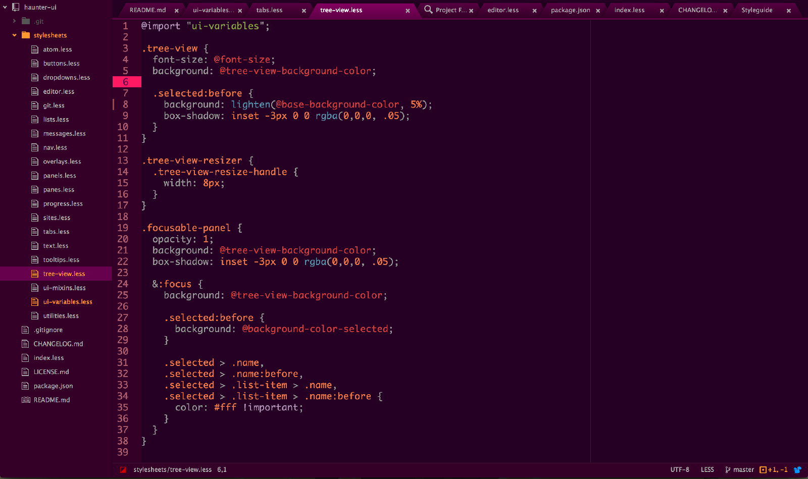

haunter.io
Spooky color themes for web developers.
Spooky color themes for web developers.
Haunter.IO is a set of color themes inspired by the titular Pokémon, that tries to evoke a retro-future 80's synth esthetic with neon pinks over dark purples.
Haunter.IO is a free and open source project. It's developed, hosted and maintained from Github.
View on GithubA syntax theme for Github's Atom Editor.
You can find and install it from within Atom, under Settings > Themes
A UI theme for Github's Atom Editor.
You can find and install it from within Atom, under Settings > Themes
